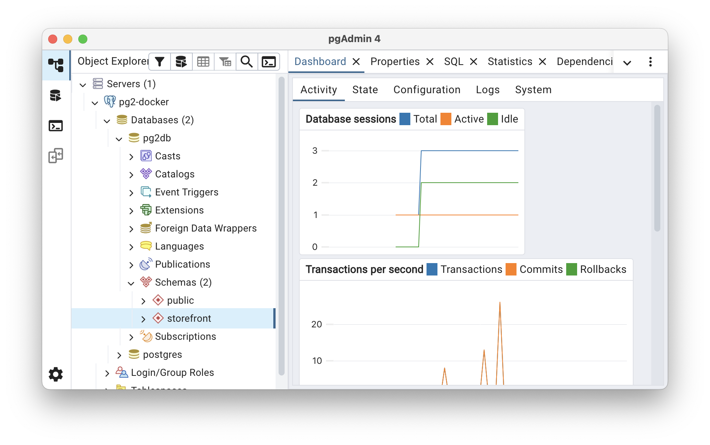

PostgreSQL
Relationele Databanken
De structuur van een Relationele Databank bestaat uit Tables (tabellen) en Constraints (beperkingen) van toepassing op de data in die tabellen.
Tables
Een Table is een structuur bestaande uit rijen en kolommen, gevuld met gegevens.
Elke Table heeft minstens:
-
Een naam, bijvoorbeeld "Klanten", "Producten" of "Spelers"
-
één of meer kolomdefinities
Elke Column wordt gedefinieerd a.d.h.v. onderstaande eigenschappen.
- Name
-
De hoofding van de kolom, bijvoorbeeld "Voornaam" of "Geboortedatum".
- DataType
-
Technische precisering van het type data dat opgeslagen zal worden in de kolom.
-
varchar(<lengte>) -
int/bigint -
decimal(<positiesInTotaal>,<cijfersAchterDeKomma>) -
bool -
timestamp -
…
-
- Nullability
-
-
null→ een rij mag een waarde hebben voor deze kolom -
not null→ een rij moet altijd een waarde hebben voor deze kolom
-
- Default Value
-
Wanneer men bij het aanmaken van een rij deze kolom niet vermeldt, wordt een standaardwaarde toegepast, bijvoorbeeld het resultaat van de functie
current_time()of de vaste waarde3.
Constraints
- Primary Key (Constraint)
-
De waarde van een veld in deze kolom, of combinatie van kolommen, moet uniek zijn in de tabel. Er kan maar één PK bestaan per tabel. Dit is dé sleutel bedoeld om een record (=rij) binnen de tabel ondubbelzinnig te identificeren.
- Unique Key (Constraint)
-
De waarde van een veld in deze kolom, of combinatie van kolommen, moet uniek zijn in de tabel. Er kan meer dan één UK bestaan per tabel. Deze zijn bedoeld om business regels rond uniciteit af te dwingen.
- Foreign Key (Constraint)
-
De waarde van een veld in een bepaalde kolom in tabel A verwijst naar een Key (Primary of Unique) in tabel B. Indien de gerefereerde waarde in tabel B niet bestaat, zal de database het record in tabel A verwerpen.
- Check Constraint
-
Een deterministische boolean expressie die gebruik kan maken van alle kolommen in de tabel en constanten om een record te evalueren. Indien de expressie naar
falseevalueert, zal het record niet kunnen toegevoegd of aangepast worden.
PostgreSQL
Opzetten
Download en installeer Docker Desktop voor jouw besturingssysteem.
docker pull postgres\ of ` als escape character naargelang omgeving)docker run -d \
--name pg2-postgres \
-e POSTGRES_USER=admin \
-e POSTGRES_PASSWORD=secret \
-e POSTGRES_DB=pg2db \
-p 5432:5432 \
postgres-
--nameis vrij te kiezen container naam -
-ezijn environment variables -
-pmapt netwerkpoort buiten docker (links) op poort binnen docker (rechts) -
postgresis de image
Door unieke -p en --name toe te wijzen, kan je meerdere containers simultaan runnen op basis van eenzelfde image.
|
database system is ready to accept connectionsVerbinden
pgAdmin is de officiële database management tool.

Je kan ook opteren voor de VS Code Extension, Rider of een van de vele alternatieven.
SQL
Structured Query Language (SQL) is de taal die we gebruiken om een databank vorm te geven en de data te manipuleren.
SQL is geen programmeertaal. In een programmeertaal beschrijf je immers hoe je iets wil doen. In SQL beschrijf je enkel wat je wil doen - het systeem bepaalt hoe dat zal gebeuren.
DDL
Data Definition Language.
DROP SCHEMA Storefront CASCADE;
CREATE SCHEMA Storefront;
CREATE TABLE Storefront.Customers (
CustomerId BIGINT GENERATED ALWAYS AS IDENTITY NOT NULL,
FirstName VARCHAR(60) NOT NULL,
LastName VARCHAR(60) NOT NULL,
DateOfBirth TIMESTAMP NOT NULL,
Email VARCHAR(100) NOT NULL,
AddressLine1 VARCHAR(36) NOT NULL,
AddressLine2 VARCHAR(36) NOT NULL,
AddressLine3 VARCHAR(36) NULL,
Country CHAR(2) NOT NULL
);
ALTER TABLE Storefront.Customers
ADD CONSTRAINT pk_Customers
PRIMARY KEY (CustomerId);
ALTER TABLE Storefront.Customers
ADD CONSTRAINT uk_Customers
UNIQUE (Email);
CREATE TABLE Storefront.Products (
ProductId BIGINT GENERATED ALWAYS AS IDENTITY NOT NULL,
Title VARCHAR(50) NOT NULL,
Description VARCHAR(250) NOT NULL,
Price DECIMAL(8,2) NOT NULL,
StockCount INT NOT NULL
);
ALTER TABLE Storefront.Products
ADD CONSTRAINT pk_Products
PRIMARY KEY (ProductId);
ALTER TABLE Storefront.Products
ADD CONSTRAINT uk_Products
UNIQUE (Title);
CREATE TABLE Storefront.Orders (
OrderId BIGINT GENERATED ALWAYS AS IDENTITY NOT NULL,
OrderDate TIMESTAMP DEFAULT CURRENT_TIMESTAMP NOT NULL,
CustomerId BIGINT NOT NULL,
TotalPrice DECIMAL(8,2) NOT NULL
);
ALTER TABLE Storefront.Orders
ADD CONSTRAINT pk_Orders
PRIMARY KEY (OrderId);
ALTER TABLE Storefront.Orders
ADD CONSTRAINT uk_Orders
UNIQUE (CustomerId, OrderDate);
ALTER TABLE Storefront.Orders
ADD CONSTRAINT fk_Orders_Customers
FOREIGN KEY (CustomerId)
REFERENCES Storefront.Customers(CustomerId);
CREATE INDEX fki_Orders_CustomerId
ON Storefront.Orders(CustomerId);
CREATE TABLE Storefront.OrderProducts (
OrderProductId BIGINT GENERATED ALWAYS AS IDENTITY NOT NULL,
OrderId BIGINT NOT NULL,
ProductId BIGINT NOT NULL,
Quantity INT NOT NULL,
Price DECIMAL(6,2) NOT NULL
);
ALTER TABLE Storefront.OrderProducts
ADD CONSTRAINT pk_OrderProducts
PRIMARY KEY (OrderProductId);
ALTER TABLE Storefront.OrderProducts
ADD CONSTRAINT uk_OrderProducts
UNIQUE (OrderId, ProductId);
ALTER TABLE Storefront.OrderProducts
ADD CONSTRAINT fk_OrderProducts_Orders
FOREIGN KEY (OrderId)
REFERENCES Storefront.Orders(OrderId);
ALTER TABLE Storefront.OrderProducts
ADD CONSTRAINT fk_OrderProducts_Products
FOREIGN KEY (ProductId)
REFERENCES Storefront.Products(ProductId);
CREATE INDEX fki_OrderProducts_OrderId
ON Storefront.OrderProducts(OrderId);
CREATE INDEX fki_OrderProducts_ProductId
ON Storefront.OrderProducts(ProductId);| Niet elke RDBMS voorziet impliciet indexen op foreign keys. Meestal wil je elke foreign key indexeren en dus zelf expliciet de relevante indexen voorzien indien ze niet vanzelf aangemaakt worden. |